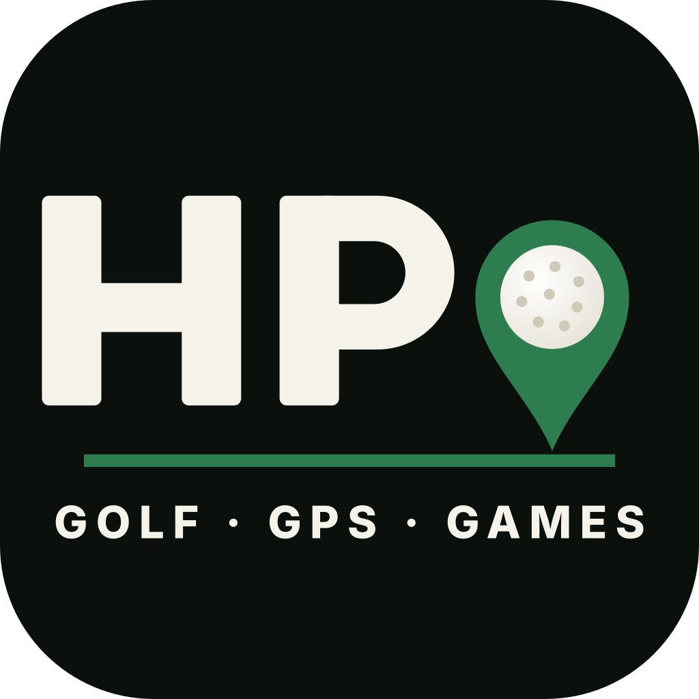

HARDPANLast updated: 17 October 2026
By using HardPan you agree to these terms. They are short on purpose. HardPan is a golf scorecard and game tracker for private groups, with HardPan GPS yardages. Rattle Golf LLC operates HardPan and also Rattle Golf Tournaments, the separate events product. These terms cover HardPan, on the App Store and on the web.
HardPan is a scorekeeping and record-keeping tool for golfers playing together. It records the games a group has agreed to play, keeps score, and works out who owes who. HardPan GPS shows yardages, wind and a satellite picture of the hole.
Any arrangement between you and the people you play with is entirely between you and them. HardPan is not a party to it, has no involvement in it, and takes no share of it.
You are responsible for ensuring that whatever you and your group do is lawful where you are. Laws about playing for money vary by country, state and jurisdiction. If a private game between friends is not permitted where you play, do not use this app to keep score of one.
HardPan is tested extensively, but no software is perfect and a golf group can enter a score wrong. The app's output is a convenience, not an authority. Check the numbers before anyone acts on them. HardPan is not responsible for a disputed result, a mis-entered score, or a disagreement between players.
You can use HardPan without an account. If you sign in with Apple, Google or an email link, keep that sign-in to yourself: whoever holds it can run your rounds and saved groups. You can sign out or delete your account at any time from Account in the app; what deletion removes is described in the Privacy Policy.
Yardages, wind and plays-like numbers are estimates from your phone's location, course data and weather services. They can be wrong. Use your own judgment on the course, and never rely on HardPan for your safety, including in bad weather. Map imagery, course data and weather come from third parties (see Acknowledgements) and are provided under their terms.
Rounds are reached by a code. If you share a round link, whoever holds it can see that round. Share links only with people you intend to include, and do not put sensitive information into a player name.
HardPan is provided as-is. It depends on network connectivity and on third-party services, and it may be unavailable, interrupted, or changed at any time. Features may be added, altered or removed. No guarantee of uptime is offered.
To the fullest extent permitted by law, HardPan is provided without warranties of any kind, express or implied, including merchantability, fitness for a particular purpose, and non-infringement.
To the fullest extent permitted by law, the developer is not liable for any indirect, incidental, special, or consequential damages, or for any loss of data, arising from use of the app. This includes any dispute about money between players.
Games, scoring, the scorecard, the leaderboard, joining a game and settling up are free. HardPan GPS (the GPS map, yardages and every other GPS feature) needs the GPS Map subscription: an auto-renewing yearly subscription with a 7-day free trial for new subscribers. These terms apply to it:
If you got HardPan from the App Store: these terms are between you and Rattle Golf LLC, not Apple. Apple is not responsible for HardPan or its content, has no obligation to provide maintenance or support for it, and is not responsible for any claim relating to it, including product liability, legal or regulatory compliance, consumer protection or intellectual property claims. If HardPan fails to meet a warranty that applies by law, you may notify Apple and Apple may refund the purchase price, if any; Apple has no other warranty obligation. You confirm you are not in a country under a U.S. government embargo and are not on a U.S. government list of prohibited or restricted parties. Apple and its subsidiaries are third-party beneficiaries of these terms and may enforce them against you. Where these terms do not cover something, Apple's Standard End User License Agreement applies.
These terms may be updated. Material changes will be reflected in the date at the top of this page.